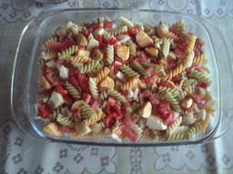

Ensalada de pasta
Ingredientes para 6 personas:

- 1/2 kg de pasta (lacitos o espirales)
- 300g de jamón de york en dados
- 4 huevos cocidos picados
- 1 Tomate fresco picado
- 1 Pimiento morrón picado
- 1/4 kg de bonito en aceite
- 2 manzanas en daditos pequeños
- 100g de nueces partidas en trocitos
- 300g de salsa rosa (o salsa coctel)
Realización:
Cuece la pasta en abundante agua con sal
(Tiempo que marque el fabricante), enfriar,
mezclas la pasta con los el resto de los ingredientes,
mezclar bien y enfriar en el frigorífico, puedes añadir
pasas de corinto.